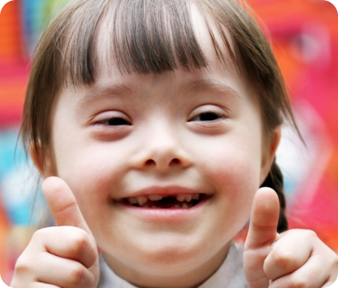

Sindrom Down adalah suatu kondisi di mana seseorang memiliki kromosom ekstra. Kromosom adalah "paket"
kecil gen dalam tubuh. Mereka menentukan bagaimana tubuh bayi terbentuk dan berfungsi saat tumbuh selama
kehamilan dan setelah lahir. Biasanya, bayi lahir dengan 46 kromosom. Bayi dengan sindrom Down memiliki
salinan ekstra dari salah satu kromosom ini, kromosom 21. Istilah medis untuk memiliki salinan ekstra
kromosom adalah 'trisomi.' Sindrom Down juga disebut sebagai Trisomi 21. Salinan ekstra ini mengubah
cara tubuh dan otak bayi berkembang, yang dapat menyebabkan tantangan mental dan fisik bagi bayi.
Meskipun orang dengan sindrom Down mungkin bertindak dan terlihat mirip, setiap orang memiliki kemampuan
yang berbeda. Orang dengan sindrom Down biasanya memiliki IQ (ukuran kecerdasan) dalam kisaran rendah
hingga sedang dan lebih lambat berbicara daripada anak-anak lain.
